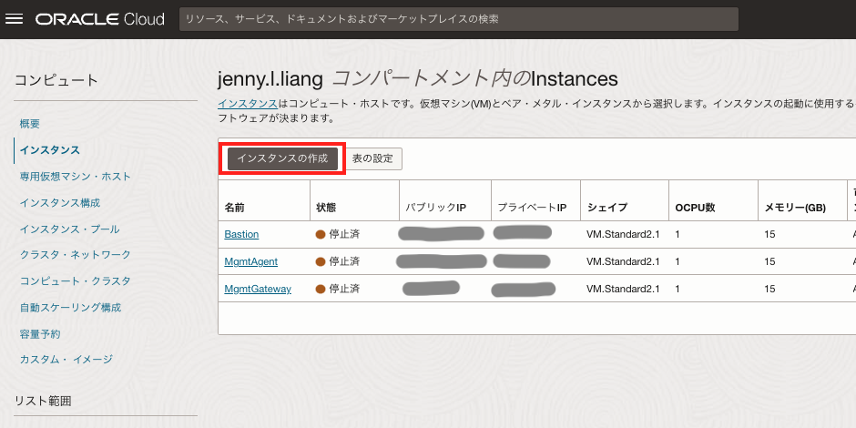
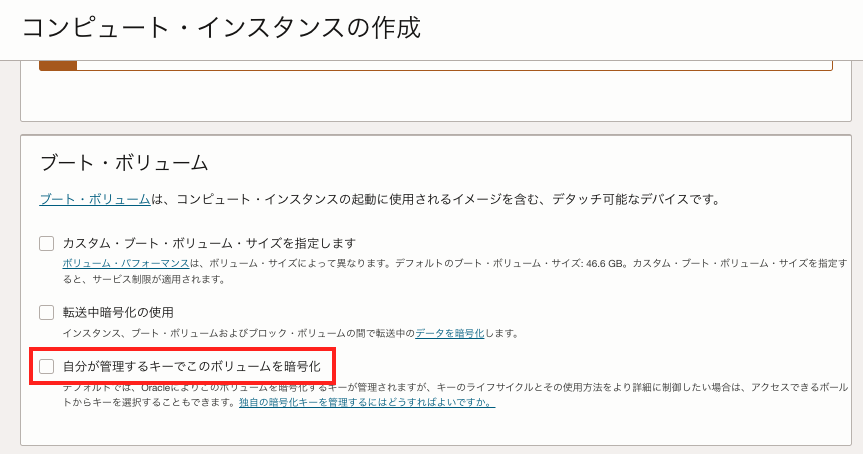
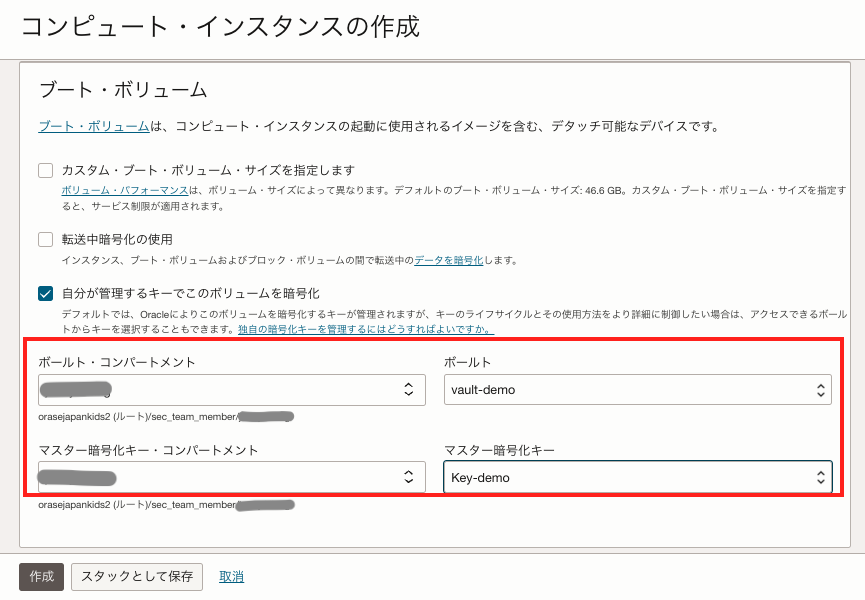
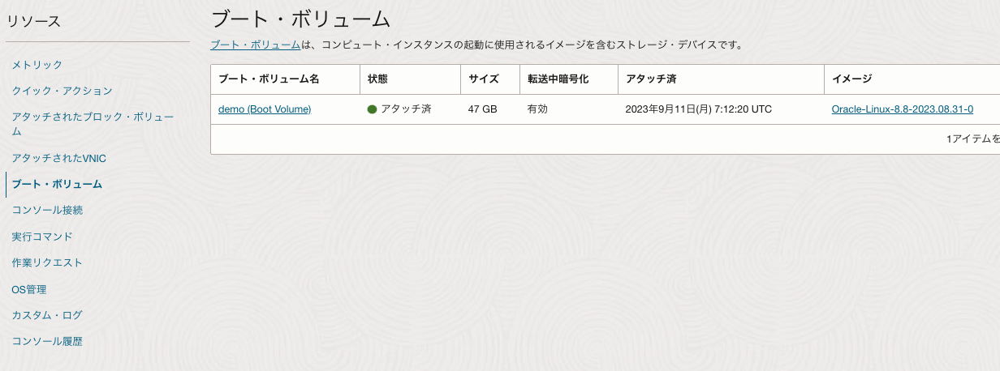
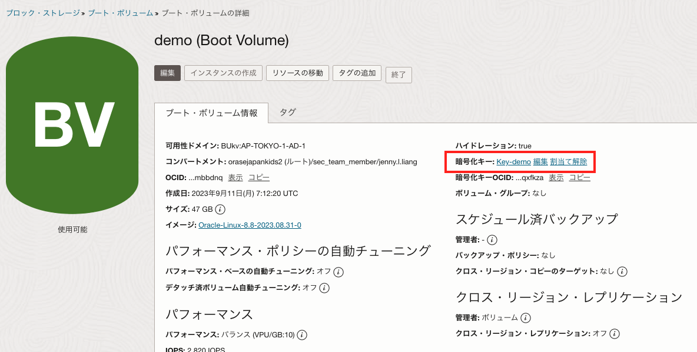
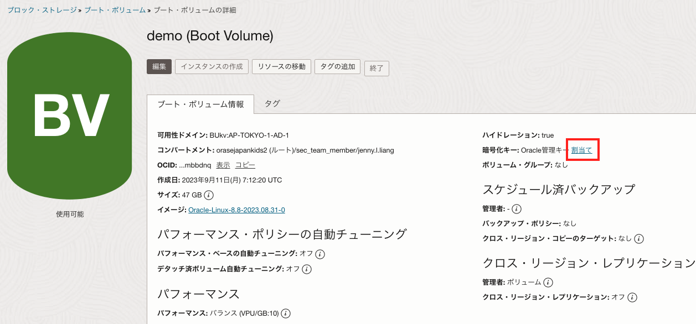
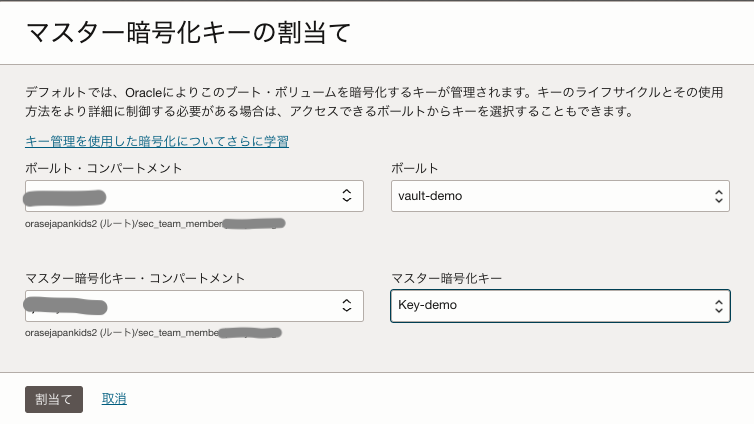

OCI Vaultはユーザーがセキュアに暗号鍵や、パスワードなどの”シークレット”を管理、運用できる鍵管理サービスです。
通常、OCIのオブジェクト・ストレージやブート・ボリュームなどのストレージサービスは、デフォルトでオラクルが管理する暗号鍵で暗号化されます。 OCI Vaultサービスを使用すると、ストレージサービスの暗号化に使用する暗号鍵を、オラクル管理の暗号鍵からユーザー管理の暗号鍵に変更することができます。
また、OCI Vaultサービスを利用するメリットとして、OCI IAMや監査ログによるアクセス管理、FIPS 140-2 Security Level 3の要件への対応、ユーザーによる暗号鍵のローテーションやバックアップを実施することができる、などが挙げられます。
OCI Vaultサービスで管理できる暗号鍵の暗号化アルゴリズムなどの詳細はドキュメントをご参照ください。
本チュートリアルでは、Vaultサービスでユーザー管理の暗号鍵を使用してコンピュート・インスタンスのブート・ボリュームを暗号化する手順を紹介します。
所要時間 : 約20分
前提条件 :
- OpenSSLをクライアント端末、もしくは任意のLinuxの環境にインストールしていること（本チュートリアルではデフォルトでOpenSSLがインストールされているCloud Shellを使用します）
- OCIチュートリアルVaultを作成し 顧客管理の鍵をインポートするを参考にVaultと暗号鍵を作成し、インポートしていること。マスター暗号キーはAESを指定します。
注意 :
- ※チュートリアル内の画面ショットについてはOracle Cloud Infrastructureの現在のコンソール画面と異なっている場合があります。
1. Vaultの準備
OCIチュートリアルVaultを作成し 顧客管理の鍵をインポートするを参考にVaultと暗号鍵を作成し、インポートしてください。前述のチュートリアル記事通り、マスター暗号化キーはAESを指定して作成してください。
2. IAMポリシーの作成
Vaultサービスに格納された暗号鍵を指定してブート・ボリュームを作成するには、ブート・ボリュームがVaultサービスにアクセスする権限が必要です。 コンピュート・インスタンスを作成するコンパートメントにて、以下IAMポリシーを作成します。
allow service blockstorage to use keys in compartment <コンパートメント名>
3. コンピュート・インスタンスの作成
OCIコンソール → コンピュート → インスタンス → 「インスタンスの作成」ボタンをクリックします。

OCIチュートリアル入門編その3 - インスタンスを作成するを参考に、コンピュートインスタンスの作成画面の各項目を入力、選択します。
コンピュート・インスタンスの作成画面の「ブート・ボリューム」の欄にて、「自分が管理するキーでこのボリュームを暗号化」にチェックを入れます。

手順1で作成したボールトとマスター暗号化キーをそれぞれ選択し、「作成」ボタンをクリックします。

以上の手順で、ユーザー管理の暗号鍵を使ってブート・ボリュームを暗号化しました。 作成したコンピュート・インスタンスの詳細画面のリソース → ブート・ボリュームからブート・ボリュームの詳細を確認することができます。 
ブート・ボリュームの詳細画面から、暗号化キーにユーザー管理のマスター暗号化キーが使用されていることを確認できます。

4. 既存のブート・ボリュームをユーザー管理の暗号鍵で暗号化する
既存のブート・ボリュームをユーザー管理の暗号鍵を使用して暗号化するように変更する場合も、コンソールからの操作で設定できます。
OCIコンソール → ストレージ → ブロック・ストレージ → ブート・ボリューム → 暗号鍵を変更したいブート・ボリュームを選択します。

ブート・ボリューム詳細画面の暗号化キーの「割当て」を選択します。

「マスター暗号化キーの割当て」画面にて、手順1で作成したボールトとマスター暗号化キーを選択し、「割当て」ボタンをクリックします。 
以上の手順で、既存のブート・ボリュームの暗号化に使用されている暗号鍵をOracle管理のものからユーザー管理のものに変更しました。